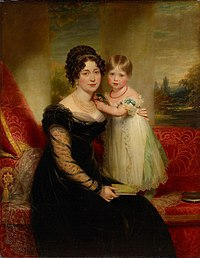
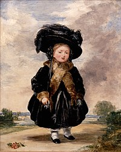
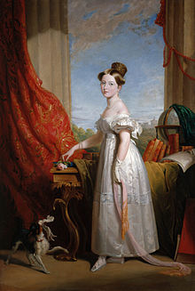
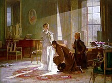
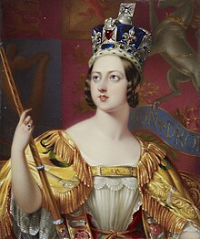
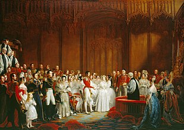
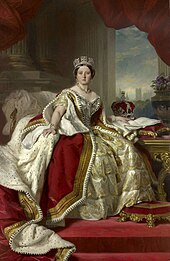

Victoria was the daughter of Prince Edward, Duke of Kent and Strathearn (the fourth son of King George III), and Princess Victoria of Saxe-Coburg-Saalfeld. After the deaths of her father and grandfather in 1820, she was raised under close supervision by her mother and her comptroller, John Conroy. She inherited the throne aged 18 after her father's three elder brothers died without surviving legitimate issue. Victoria, a constitutional monarch, attempted privately to influence government policy and ministerial appointments; publicly, she became a national icon who was identified with strict standards of personal morality.

Victoria married her first cousin, Prince Albert of Saxe-Coburg and Gotha, in 1840. Their nine children married into royal and noble families across the continent, earning Victoria the sobriquet "grandmother of Europe". After Albert's death in 1861, Victoria plunged into deep mourning and avoided public appearances. As a result of her seclusion, British republicanism temporarily gained strength, but in the latter half of her reign, her popularity recovered. Her Golden and Diamond jubilees were times of public celebration. Victoria died at Osborne House on the Isle of Wight, at the age of 81. The last British monarch of the House of Hanover, she was succeeded by her son Edward VII of the House of Saxe-Coburg and Gotha.
Birth and ancestry
Victoria's father was Prince Edward, Duke of Kent and Strathearn, the fourth son of King George III and Queen Charlotte. Until 1817, King George's only legitimate grandchild was Edward's niece Princess Charlotte of Wales, the daughter of George, Prince Regent (who would become George IV). Princess Charlotte's death in 1817 precipitated a succession crisis that brought pressure on Prince Edward and his unmarried brothers to marry and have children. In 1818, the Duke of Kent married Princess Victoria of Saxe-Coburg-Saalfeld, a widowed German princess with two children (1804–1856) and Feodora (1807–1872) by her first marriage to Emich Carl, 2nd Prince of Leiningen. Her brother Leopold was Princess Charlotte's widower and later the first king of Belgium. The Duke and Duchess of Kent's only child, Victoria was born at 4:15 am on Monday 24 May 1819 at Kensington Palace in London.

Victoria was christened privately by the Archbishop of Canterbury, Charles Manners-Sutton, on 24 June 1819 in the Cupola Room at Kensington Palace. She was baptised Alexandrina after one of her godparents, Tsar Alexander I of Russia, and Victoria, after her mother. Additional names proposed by her parents Georgina (or Georgiana), Charlotte, and Augusta were dropped on the instructions of the Prince Regent.

At birth, Victoria was fifth in the line of succession after the four eldest sons of George III: George, Prince Regent (later George IV); Frederick, Duke of York; William, Duke of Clarence (later William IV) and Victoria's father, Edward, Duke of Kent. Prince George had no surviving children, and Prince Frederick had no children; further, both were estranged from their wives, who were both past child-bearing age, so the two eldest brothers were unlikely to have any further legitimate children. William married in 1818, in a joint ceremony with his brother Edward, but both of William's legitimate daughters died as infants. The first of these was Princess Charlotte, who was born and died on 27 March 1819, two months before Victoria was born. Victoria's father died in January 1820, when Victoria was less than a year old. A week later her grandfather died and was succeeded by his eldest son as George IV. Victoria was then third in line to the throne after Frederick and William. She was fourth in line while William's second daughter, Princess Elizabeth, lived, from 10 December 1820 to 4 March 1821.
Heir presumptive
Prince Frederick died in 1827, followed by George IV in 1830; their next surviving brother succeeded to the throne as William IV, and Victoria became heir presumptive. The Regency Act 1830 made special provision for Victoria's mother to act as regent in case William died while Victoria was still a minor. King William distrusted the Duchess's capacity to be regent, and in 1836 he declared in her presence that he wanted to live until Victoria's 18th birthday, so that a regency could be avoided.
Victoria later described her childhood as "rather melancholy". Her mother was extremely protective, and Victoria was raised largely isolated from other children under the so-called "Kensington System", an elaborate set of rules and protocols devised by the Duchess and her ambitious and domineering comptroller, Sir John Conroy, who was rumoured to be the Duchess's lover. The system prevented the princess from meeting people whom her mother and Conroy deemed undesirable (including most of her father's family), and was designed to render her weak and dependent upon them. The Duchess avoided the court because she was scandalised by the presence of King William's illegitimate children. Victoria shared a bedroom with her mother every night, studied with private tutors to a regular timetable, and spent her play-hours with her dolls and her King Charles Spaniel, Dash. Her lessons included French, German, Italian, and Latin, but she spoke only English at home.

In 1830, the Duchess and Conroy took Victoria across the centre of England to visit the Malvern Hills, stopping at towns and great country houses along the way. Similar journeys to other parts of England and Wales were taken in 1832, 1833, 1834 and 1835. To the King's annoyance, Victoria was enthusiastically welcomed in each of the stops. William compared the journeys to royal progresses and was concerned that they portrayed Victoria as his rival rather than his heir presumptive. Victoria disliked the trips; the constant round of public appearances made her tired and ill, and there was little time for her to rest. She objected on the grounds of the King's disapproval, but her mother dismissed his complaints as motivated by jealousy and forced Victoria to continue the tours. At Ramsgate in October 1835, Victoria contracted a severe fever, which Conroy initially dismissed as a childish pretence. While Victoria was ill, Conroy and the Duchess unsuccessfully badgered her to make Conroy her private secretary. As a teenager, Victoria resisted persistent attempts by her mother and Conroy to appoint him to her staff. Once queen, she banned him from her presence, but he remained in her mother's household.
By 1836, Victoria's maternal uncle Leopold, who had been King of the Belgians since 1831, hoped to marry her to Prince Albert, the son of his brother Ernest I, Duke of Saxe-Coburg and Gotha. Leopold arranged for Victoria's mother to invite her Coburg relatives to visit her in May 1836, with the purpose of introducing Victoria to Albert. William IV, however, disapproved of any match with the Coburgs, and instead favoured the suit of Prince Alexander of the Netherlands, second son of the Prince of Orange. Victoria was aware of the various matrimonial plans and critically appraised a parade of eligible princes. According to her diary, she enjoyed Albert's company from the beginning. After the visit she wrote, "[Albert] is extremely handsome; his hair is about the same colour as mine; his eyes are large and blue, and he has a beautiful nose and a very sweet mouth with fine teeth; but the charm of his countenance is his expression, which is most delightful. Alexander, on the other hand, she described as "very plain".
Victoria wrote to King Leopold, whom she considered her "best and kindest adviser", to thank him "for the prospect of great happiness you have contributed to give me, in the person of dear Albert ... He possesses every quality that could be desired to render me perfectly happy. He is so sensible, so kind, and so good, and so amiable too. He has besides the most pleasing and delightful exterior and appearance you can possibly see. However at 17, Victoria, though interested in Albert, was not yet ready to marry. The parties did not undertake a formal engagement, but assumed that the match would take place in due time.

Accession and marriage
Victoria turned 18 on 24 May 1837, and a regency was avoided. Less than a month later, on 20 June 1837, William IV died at the age of 71, and Victoria became Queen of the United Kingdom. In her diary she wrote, "I was awoke at 6 o'clock by Mamma, who told me the Archbishop of Canterbury and Lord Conyngham were here and wished to see me. I got out of bed and went into my sitting-room (only in my dressing gown) and alone, and saw them. Lord Conyngham then acquainted me that my poor Uncle, the King, was no more, and had expired at 12 minutes past 2 this morning, and consequently that I am Queen. Official documents prepared on the first day of her reign described her as Alexandrina Victoria, but the first name was withdrawn at her own wish and not used again.
Since 1714, Britain had shared a monarch with Hanover in Germany, but under Salic law, women were excluded from the Hanoverian succession. While Victoria inherited the British throne, her father's unpopular younger brother, Ernest Augustus, Duke of Cumberland, became King of Hanover. He was Victoria's heir presumptive until she had a child.

At the time of Victoria's accession, the government was led by the Whig prime minister Lord Melbourne. He at once became a powerful influence on the politically inexperienced monarch, who relied on him for advice. Charles Greville supposed that the widowed and childless Melbourne was "passionately fond of her as he might be of his daughter if he had one", and Victoria probably saw him as a father figure. Her coronation took place on 28 June 1838 at Westminster Abbey. Over 400,000 visitors came to London for the celebrations. She became the first sovereign to take up residence at Buckingham Palace and inherited the revenues of the duchies of Lancaster and Cornwall as well as being granted a civil list allowance of £385,000 per year. Financially prudent, she paid off her father's debts.
At the start of her reign Victoria was popular, but her reputation suffered in an 1839 court intrigue when one of her mother's ladies-in-waiting, Lady Flora Hastings, developed an abdominal growth that was widely rumoured to be an out-of-wedlock pregnancy by Sir John Conroy. Victoria believed the rumours. She hated Conroy, and despised "that odious Lady Flora", because she had conspired with Conroy and the Duchess in the Kensington System. At first, Lady Flora refused to submit to an intimate medical examination, until in mid-February she eventually acquiesced, and was found to be a virgin. Conroy, the Hastings family, and the opposition Tories organised a press campaign implicating the Queen in the spreading of false rumours about Lady Flora. When Lady Flora died in July, the post-mortem revealed a large tumour on her liver that had distended her abdomen. At public appearances, Victoria was hissed and jeered as "Mrs. Melbourne".
In 1839, Melbourne resigned after Radicals and Tories (both of whom Victoria detested) voted against a bill to suspend the constitution of Jamaica. The bill removed political power from plantation owners who were resisting measures associated with the abolition of slavery. The Queen commissioned a Tory, Robert Peel, to form a new ministry. At the time, it was customary for the prime minister to appoint members of the Royal Household, who were usually his political allies and their spouses. Many of the Queen's ladies of the bedchamber were wives of Whigs, and Peel expected to replace them with wives of Tories. In what became known as the "bedchamber crisis", Victoria, advised by Melbourne, objected to their removal. Peel refused to govern under the restrictions imposed by the Queen, and consequently resigned his commission, allowing Melbourne to return to office.

Though Victoria was now queen, as an unmarried young woman she was required by social convention to live with her mother, despite their differences over the Kensington System and her mother's continued reliance on Conroy. The Duchess was consigned to a remote apartment in Buckingham Palace, and Victoria often refused to see her. When Victoria complained to Melbourne that her mother's proximity promised "torment for many years", Melbourne sympathised but said it could be avoided by marriage, which Victoria called a "schocking alternative". Victoria showed interest in Albert's education for the future role he would have to play as her husband, but she resisted attempts to rush her into wedlock.
Victoria continued to praise Albert following his second visit in October 1839. They felt mutual affection and the Queen proposed to him on 15 October 1839, just five days after he had arrived at Windsor. They were married on 10 February 1840, in the Chapel Royal of St James's Palace, London. Victoria was love-struck. She spent the evening after their wedding lying down with a headache, but wrote ecstatically in her diary:
I never never spent such an evening!!! my dearest dearest dear Albert ... his excessive love & affection gave me feelings of heavenly love & happiness I never could have hoped to have felt before! He clasped me in his arms, & we kissed each other again & again! His beauty, his sweetness & gentleness really how can I ever be thankful enough to have such a Husband! ... to be called by names of tenderness, I have never yet heard used to me before was bliss beyond belief! Oh! This was the happiest day of my life!
Albert became an important political adviser as well as the Queen's companion, replacing Melbourne as the dominant influential figure in the first half of her life. Victoria's mother was evicted from the palace, to Ingestre House in Belgrave Square. After the death of Victoria's aunt Princess Augusta in 1840, the Duchess was given both Clarence House and Frogmore House. Through Albert's mediation, relations between mother and daughter slowly improved.

During Victoria's first pregnancy in 1840, in the first few months of the marriage, 18-year-old Edward Oxford attempted to assassinate her while she was riding in a carriage with Prince Albert on her way to visit her mother. Oxford fired twice, but either both bullets missed or, as he later claimed, the guns had no shot. He was tried for high treason, found not guilty by reason of insanity, committed to an insane asylum indefinitely, and later sent to live in Australia. In the immediate aftermath of the attack, Victoria's popularity soared, mitigating residual discontent over the Hastings affair and the bedchamber crisis. Her daughter, also named Victoria, was born on 21 November 1840. The Queen hated being pregnant, viewed breast-feeding with disgust, and thought newborn babies were ugly. Nevertheless, over the following seventeen years, she and Albert had a further eight children: Albert Edward, Alice, Alfred, Helena, Louise, Arthur, Leopold and Beatrice.
The household was largely run by Victoria's childhood governess, Baroness Louise Lehzen from Hanover. Lehzen had been a formative influence on Victoria and had supported her against the Kensington System. Albert, however, thought that Lehzen was incompetent and that her mismanagement threatened his daughter Victoria's health. After a furious row between Victoria and Albert over the issue, Lehzen was pensioned off in 1842, and Victoria's close relationship with her ended.